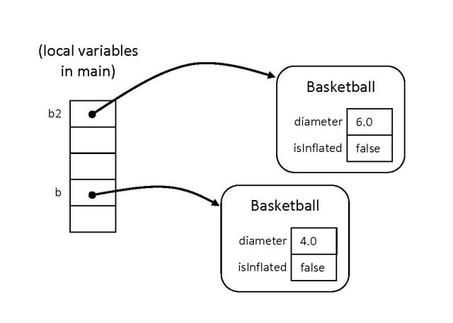
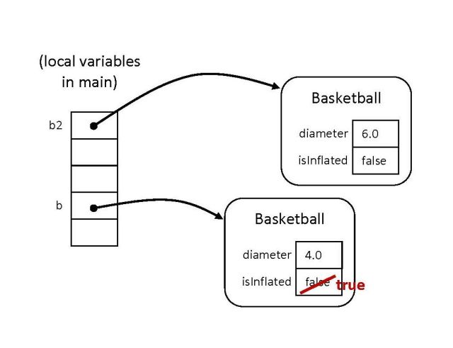

Constructing Instances
In order for you or other programmers to use basketballs in your own programs, you'll need to know what operations are defined. Documentation for Java classes will normally be found in a set of html pages, just like those for the Java API. Take a look at theBasketball documentation now. In the Method Summary you can see there are methods for getting the diameter or circumference, or for causing
the basketball to be inflated. You'll also see something called a constructor, which is the mechanism for creating a new object.
Now, create a new class BasketballTest with a main method, and add the following code to your main method and try running it.
Declare a Basketball variable:
Basketball b;In order to assign this variable a value, we have to construct a
Basketball object. This is done with the new
keyword and the constructor. We'll provide an argument of 4.0 to the constructor,
to make a basketball with diameter 4.
b = new Basketball(4.0);We can try using the
getDiameter() method to observe that
the diameter really is 4.0 now.
System.out.println(b.getDiameter());We can also check that the
isDribbleable() returns
false, since a newly constructed Basketball is not inflated.
System.out.println(b.isDribbleable());Next, let's create a second basketball that has diameter 6.
Basketball b2 = new Basketball(6.0);The situation we have now can be pictured like this. Each of the local variables in
main refers to an instance of the Basketball
class. Each instance has its own attributes.

Next, we can modify the state of a Basketball using the inflate()
method:
b.inflate();We can check that the basketball
b is now dribbleable, but that
the second one is unchanged.
System.out.println(b.isDribbleable()); // should be true now System.out.println(b2.isDribbleable()); // should still be falseAnd here is an updated picture.
